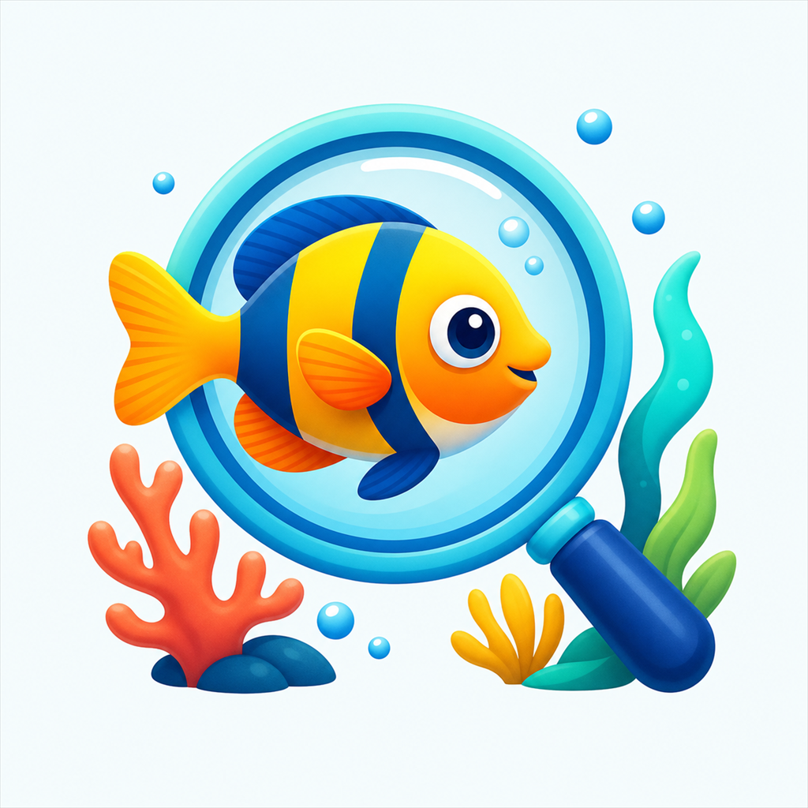

Scan. Track. Care.
FinDex
A friendly home for aquarium records, fish photos, care notes, and optional AI-assisted observations.
FinDex for iPhone

Included with FinDex
Your aquarium story, organized
Manual aquarium tracking is available without FinDex Pro. Build tank and fish records at your own pace and keep the details that matter together.
- Create freshwater, saltwater, and brackish aquarium records
- Track fish, groups, health status, dates, photos, and notes
- Edit or remove your records whenever you need
- Use general stored species information and local recommendations
Optional AI
Two complimentary analyses
Every eligible verified account receives two complimentary AI analyses. Fish identification, aquarium analysis, follow-up questions, image-assisted record drafts, and care reports share the same allowance.
After both uses are consumed, additional AI use requires FinDex Pro.
- Ask about a fish or aquarium using relevant saved context
- Attach a photo when it helps explain a question
- Review cautious fish-identification candidates
- Generate aquarium care guidance from saved records
FinDex Pro
Continue using AI tools
FinDex Pro provides continued access to supported AI aquarium features after the complimentary allowance is used. Pro remains subject to reasonable hourly, monthly, security, and safety limits.
Available products, billing periods, and localized prices are shown by Apple before purchase. FinDex does not advertise a subscription trial, and the complimentary analyses are not an Apple trial.
Helpful suggestions, human judgment
AI identification and care suggestions may be incorrect. Confirm species and care requirements with reliable sources. FinDex provides general aquarium guidance and is not a veterinary service; it does not diagnose disease or prescribe medication.